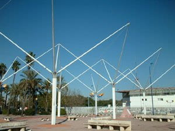

En el espacio, después de los puntos, los elementos más simples que existen son las rectas. Así que vamos a empezar por estudiar la situación en que pueden estar.
Posiciones relativas
Dos rectas en el espacio pueden tener cuatro posiciones relativas dependiendo de si tienen la misma dirección y de si comparten puntos:
En esta escena puedes ver lo que ocurre cuando dos rectas (de color rojo una y negro la otra) son paralelas, en las ecuaciones vectoriales de las rectas que aparecen en la parte superior izquierda podrás apreciar como sus vectores directores son iguales, si bien los vectores de posición son diferentes.
-
Si pruebas a mover un punto para unirlo con otro, reduciendo los cuatro puntos azules iniciales a tres verás la situación que se da cuando dos rectas se cruzan.
-
Si unes dos de ellos harás que las dos rectas se corten.
-
Por último si unes los cuatro puntos en uno solo en el origen de coordenadas harás que las dos rectas coincidan.
Texto
Ejemplos de las cuatro posiciones podemos encontrarlos con facilidad en nuestro entorno cotidiano. Imaginemos que vamos circulando por una carretera; si de pronto nos encontramos con otra carretera con la que hay un cruce, con los correspondientes Stop o Ceda el paso, nos encontramos con dos rectas que se cortan. Precisamente el punto de corte es el cruce. Si por el contrario la carretera cruza a distinto nivel, como pasa por ejemplo en las autovías, tenemos dos rectas que se cruzan.
Si circulamos por una autovía, nosotros marchamos por un carril y los que van en dirección contraria por otro paralelo, estaríamos en el caso de rectas paralelas. Mientras que si circulamos por una carretera comarcal, los dos sentidos circulan por la misma carretera, estaríamos en el caso de dos líneas coincidentes.
Averiguar la posición relativa de dos rectas
MÉTODO 1: Utilizando Vectores
Tenemos dos rectas definidas por sus elementos: un punto y un vector director:
\( r \equiv P(p_1, p_2, p_3) \text{ y } \vec{v}=(v_1, v_2, v_3) \)
\( s \equiv Q(q_1, q_2, q_3) \text{ y } \vec{w}=(w_1, w_2, w_3) \)
1. Tienen distinta dirección
Ocurre si \( \vec{v} \) y \( \vec{w} \) no son proporcionales (linealmente independientes). Estudiamos el determinante formado por \( \vec{v} \), \( \vec{w} \) y \( \vec{PQ} \):
- Si es distinto de cero (independientes): Las rectas se cruzan.
- Si es cero (dependientes): Las rectas se cortan en un punto.
2. Tienen la misma dirección
Ocurre si \( \vec{v} \) y \( \vec{w} \) son proporcionales (linealmente dependientes). Basta comprobar si el punto \( P \) de la recta \( r \) pertenece a la recta \( s \):
- Si \( P \) no pertenece a \( s \): Las rectas son paralelas.
- Si \( P \) pertenece a \( s \): Las rectas son coincidentes.
MÉTODO 2: Resolviendo el Sistema
Escribimos las dos rectas en su forma paramétrica:
\( r \equiv \begin{cases} x = p_1 + t v_1 \\ y = p_2 + t v_2 \\ z = p_3 + t v_3 \end{cases} \qquad s \equiv \begin{cases} x = q_1 + s w_1 \\ y = q_2 + s w_2 \\ z = q_3 + s w_3 \end{cases} \)
A continuación, igualamos los valores de \( x, y, z \) de ambas expresiones y organizamos el sistema dejando las incógnitas (\( t \) y \( s \)) a un lado y los términos independientes al otro:
\( \begin{cases} p_1 + t v_1 = q_1 + s w_1 \\ p_2 + t v_2 = q_2 + s w_2 \\ p_3 + t v_3 = q_3 + s w_3 \end{cases} \implies \begin{cases} t v_1 - s w_1 = q_1 - p_1 \\ t v_2 - s w_2 = q_2 - p_2 \\ t v_3 - s w_3 = q_3 - p_3 \end{cases} \)
A partir de este sistema, estudiamos la matriz de los coeficientes (\( Mc \)) y la matriz ampliada (\( Ma \)):
\( Mc = \begin{pmatrix} v_1 & w_1 \\ v_2 & w_2 \\ v_3 & w_3 \end{pmatrix} \qquad Ma = \begin{pmatrix} v_1 & w_1 & | & q_1 - p_1 \\ v_2 & w_2 & | & q_2 - p_2 \\ v_3 & w_3 & | & q_3 - p_3 \end{pmatrix} \)
(Nota: Utilizar \( w_i \) o \( -w_i \) en las matrices no altera el cálculo de sus rangos).
Finalmente, aplicamos el Teorema de Rouché-Capelli a las matrices resultantes:
1. Si rango(\(Mc\)) = 2
(Rectas con distinta dirección)
- rango(\(Ma\)) = 3: Sistema incompatible. No hay solución y las rectas se cruzan.
- rango(\(Ma\)) = 2: Sistema compatible determinado. Hay una única solución y las rectas se cortan en un punto.
2. Si rango(\(Mc\)) = 1
(Rectas con la misma dirección)
- rango(\(Ma\)) = 2: Sistema incompatible. No hay solución y las rectas son paralelas.
- rango(\(Ma\)) = 1: Sistema compatible indeterminado. Hay infinitas soluciones y las rectas son coincidentes.
Ejercicio
Estudia las posiciones relativas de los siguientes pares de rectas. Si alguna de ellas se cortan en un punto, halla dicho punto.
a) \(r \equiv \dfrac{x-1}{6} = \dfrac{y+2}{-9} = \dfrac{z}{-3}\) y \(r' \equiv \dfrac{x+1}{-4} = \dfrac{y-1}{6} = \dfrac{z+1}{2}\)
b) \(r \equiv \begin{cases} x = 1+3t \\ y = -2t \\ z = 1+t \end{cases}\) y \(r' \equiv \dfrac{x-1}{1} = \dfrac{y-2}{2} = \dfrac{z}{-1}\)
Ejercicio
Estudia la posición relativa de las siguientes pares de rectas.
a) \(r \equiv \dfrac{x+1}{4} = \dfrac{y+2}{3} = \dfrac{z-2}{-1}\) y \(r' \equiv \dfrac{x-1}{-1} = \dfrac{y-2}{1} = \dfrac{z+3}{-2}\)
b) \(r \equiv (2,3,1)+t(-1,2,1)\) y \(r' \equiv \begin{cases} x = 3+2s \\ y = 1-4s \\ z = -2s \end{cases}\)
Radiación de rectas
Si tomamos un punto cualquiera del espacio y consideramos todas las rectas que pasan por ese punto, al conjunto de rectas que se forman se le llama Radiación de Rectas.
Si tenemos el punto \(P(p_1,p_2,p_3)\), que sería el vértice de esa radiación, la ecuación de este lugar geométrico sería: \[\dfrac{x-p_1}{a}=\dfrac{y-p_2}{b}=\dfrac{z-p_3}{c}\]
Para cada valor que le demos a la terna \((a,b,c)\) obtendremos una recta distinta perteneciente a la radiación.